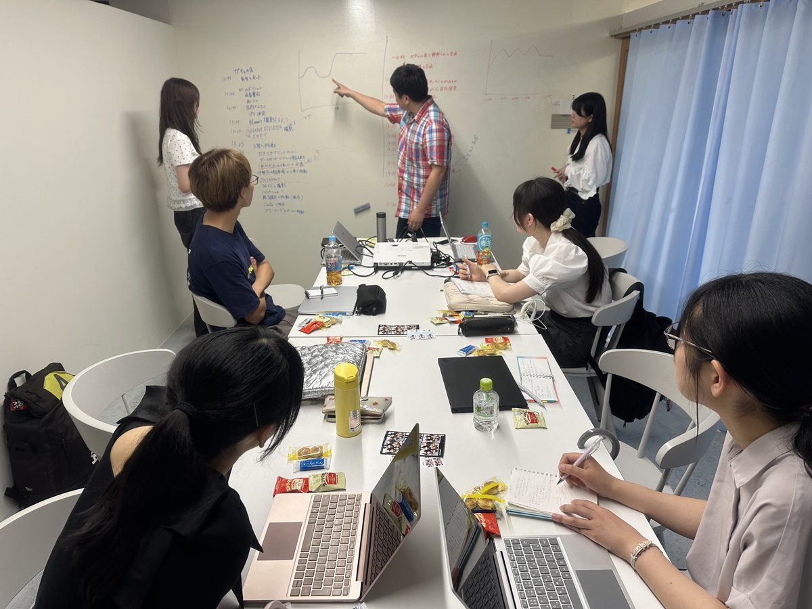
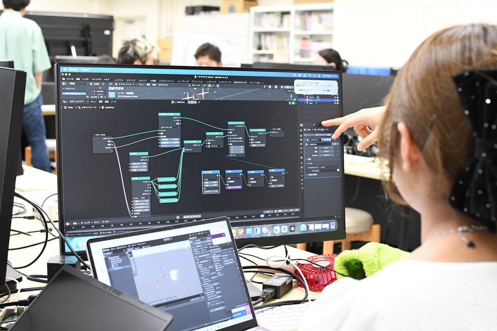
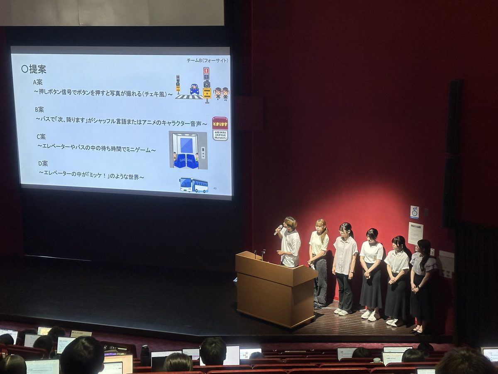
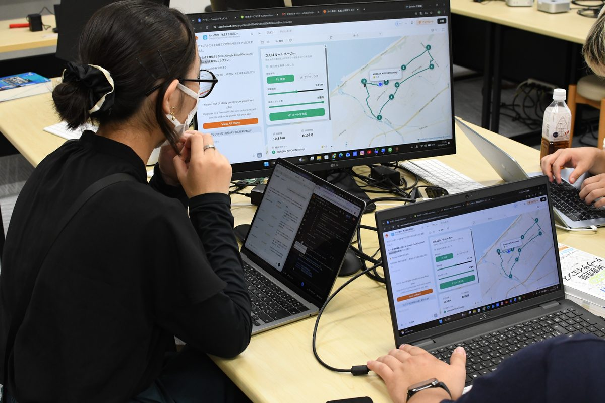
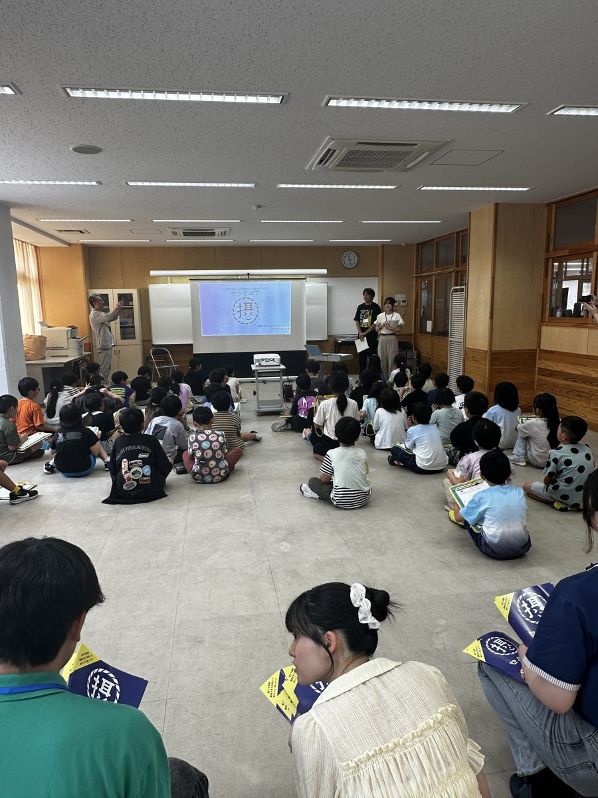
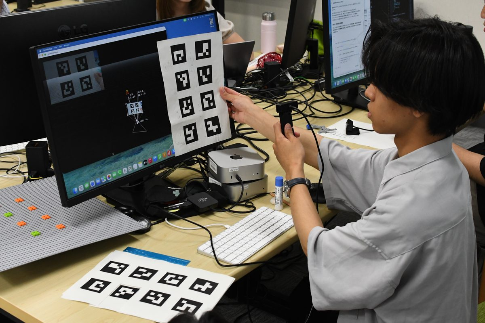
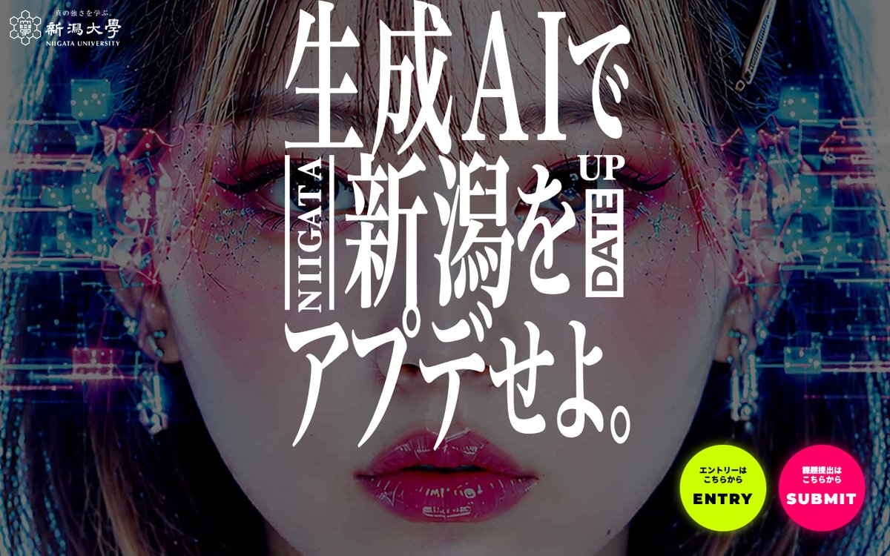

〜 デジタルの力で未来をつくる 〜
本企画は現在検討段階です。
学生の皆さんの反応をもとに実施判断をします。
今日の社会課題を解決するには、課題を見つけ、多様な視点や技術を組み合わせ、アイデアを形にしていく力が求められます。フィールドスタディーズで見つけた課題や、DXスタディーズで身につけた技術・経験を振り返り、それらを次のチャレンジにつなげてみましょう。
このコンテストでは、創生学修コースとDX共創コースの学生がそれぞれの強みを持ち寄り、チームで社会課題に挑みます。異なる分野の学生と協働しながら、課題発見から試作・発表までを経験し、チームで社会課題に挑む力を身につけることを目指します。
分野を越えて連携できる人材へ。
お互いの強みを生かして学び合う。






農業、建設、製造、教育、医療・介護、地域、環境など、社会課題のテーマはさまざまです。前期の活動をさらに発展させても、そこで得た経験を別の課題に応用しても、まったく新しいテーマから始めても構いません。
※詳細日程は後日案内します。
個人で登録した人には、仲間を見つける「マッチングの場」を設けます。
創生学修コース・DX共創コースの両方の学生を含むグループで制作します。
AIを使った部分も含め、制作内容を自分たちで説明できればOK。
個人や、まだ両コースがそろっていないグループ向けに、仲間と出会う場を設けます。グループができたら、改めてグループで登録します。
課題解決の案と、それを形にした実装コンテンツ（アプリ、Webコンテンツ、デバイスなど）を「作品」としてまとめます。提出するのは 作品説明 PDF（2枚） と 実装コンテンツ の2点です（実装コンテンツは Google ドライブまたは GitHub のリンクで提出）。
提出された作品の書面審査に加えて、口頭で発表するプレゼン審査を行います。いずれも 4つの評価軸 で評価します。
審査結果と、受賞記念発表会のご案内をお知らせします。
優秀な作品を学部長表彰。受賞グループが成果を発表します。
技術から考え始めても、課題から考え始めても OK。
「DX技術をどう社会課題に応用できるか」から考え始める。
「解決すべき社会課題を定め、それにどうDX技術を応用できるか」から考え始める。
受賞グループは、受賞記念発表会で成果を発表します。
このコンテストで形にしたアイデアや成果を、学部内で終わらせず、ぜひ次の挑戦へつなげてください。
新潟大学には、全学の学部生・大学院生を対象とした『新潟大学 生成AIコンテスト』があります。このコンテストでの取り組みをさらに発展させ、ぜひ全学コンテストへの挑戦につなげてください。さらに、取り組みの内容や発展に応じて、全国的なAIコンテストなど、学外での挑戦へつなげていくことも想定しています。

※日程・要項は外部サイトの最新情報をご確認ください。
コンテストのサイトを見る ↗